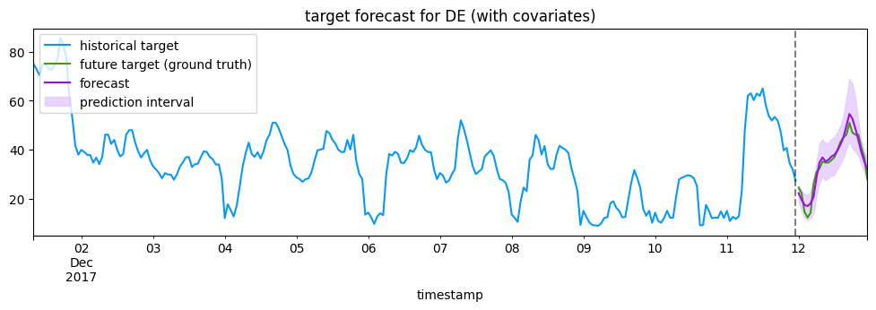
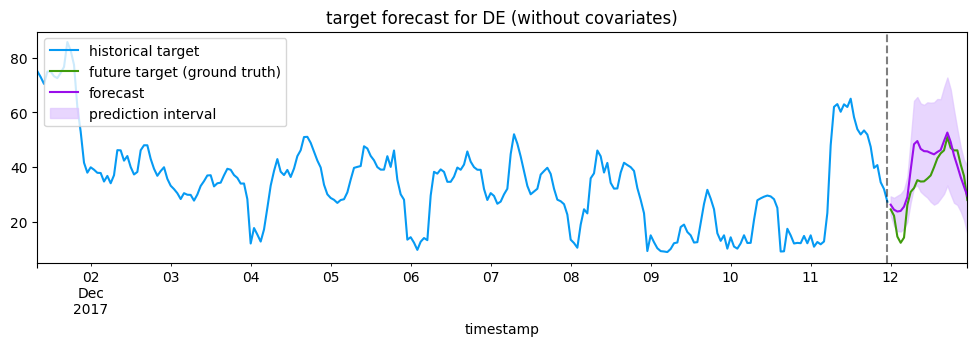
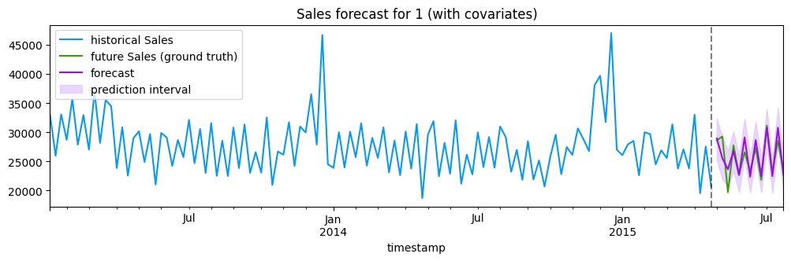
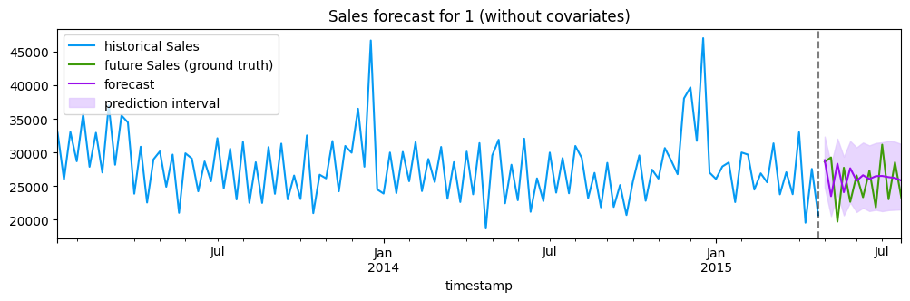
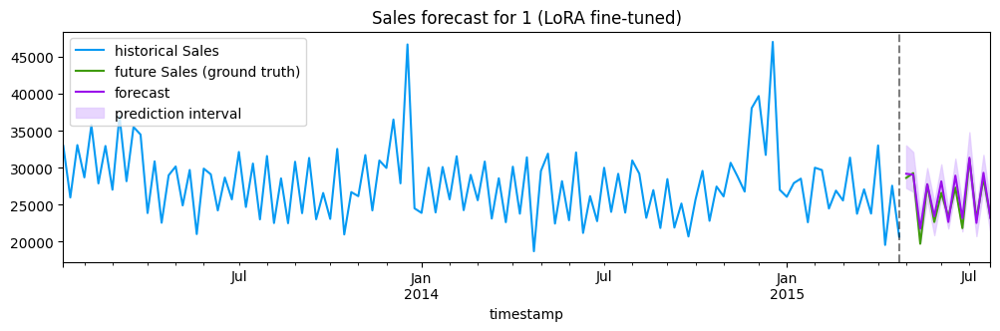

chronos2 使用示例
加载模型
开始加载模型amazon/chronos-2
import os
# 当 GPU 可用时，仅使用 1 个 GPU
os.environ["CUDA_VISIBLE_DEVICES"] = "0"
import pandas as pd
import numpy as np
import matplotlib.pyplot as plt
from chronos import BaseChronosPipeline, Chronos2Pipeline
# 加载 Chronos-2 pipeline
# device_map:
# - cpu: 使用CPU
# - cuda: 使用GPU
pipeline: Chronos2Pipeline = BaseChronosPipeline.from_pretrained("amazon/chronos-2", device_map="cpu")单变量预测
# 加载原始数据
context_df = pd.read_csv("https://autogluon.s3.amazonaws.com/datasets/timeseries/m4_hourly/train.csv")
# 打印数据维度：353500行,3列
print("Input dataframe shape:", context_df.shape)
# 打印数据前5行
display(context_df.head())Input dataframe shape: (353500, 3)| item_id | timestamp | target | |
|---|---|---|---|
| 0 | H1 | 1750-01-01 00:00:00 | 605.0 |
| 1 | H1 | 1750-01-01 01:00:00 | 586.0 |
| 2 | H1 | 1750-01-01 02:00:00 | 586.0 |
| 3 | H1 | 1750-01-01 03:00:00 | 559.0 |
| 4 | H1 | 1750-01-01 04:00:00 | 511.0 |
pred_df = pipeline.predict_df(context_df, prediction_length=24, quantile_levels=[0.1, 0.5, 0.9])
print("Output dataframe shape:", pred_df.shape)
display(pred_df.head())Output dataframe shape: (9936, 7)| item_id | timestamp | target_name | predictions | 0.1 | 0.5 | 0.9 | |
|---|---|---|---|---|---|---|---|
| 0 | H1 | 1750-01-30 04:00:00 | target | 624.867981 | 611.385071 | 624.867981 | 638.598755 |
| 1 | H1 | 1750-01-30 05:00:00 | target | 563.703125 | 546.655029 | 563.703125 | 578.665649 |
| 2 | H1 | 1750-01-30 06:00:00 | target | 521.589966 | 505.747467 | 521.589966 | 537.950806 |
| 3 | H1 | 1750-01-30 07:00:00 | target | 489.910706 | 473.671875 | 489.910706 | 508.854126 |
| 4 | H1 | 1750-01-30 08:00:00 | target | 471.144531 | 452.199402 | 471.144531 | 491.050385 |
predict_df 支持以下参数：
df: 长格式的DataFrame，包含id（标识符）、timestamp（时间戳）和目标列future_df: 可选的包含未来协变量的DataFrame（同时出现在df和future_df中的列被视为已知的未来协变量）id_column: 时间序列标识符的列名（默认值："item_id"）timestamp_column: 时间戳的列名（默认值："timestamp"）target: 需要预测的目标列名称（默认值："target"）prediction_length: 预测的时间步数quantile_levels: 需要计算的分位数（默认值：[0.1, 0.2, ..., 0.9]）
协变量预测
Chronos-2 可以利用协变量来提高预测准确性。我们用两个真实世界的例子来演示这一点。
能源价格预测
使用历史价格以及日前负荷预测（Ampirion Load Forecast）和可再生能源发电预测（PV+Wind Forecast）来预测未来一天的每小时能源价格。
# 能源价格预测配置
target = "target" # 目标变量列名（要预测的值：电价）
prediction_length = 24 # 预测未来24个时间点（可能是24小时）
id_column = "id" # 时间序列标识符列名
timestamp_column = "timestamp" # 时间戳列名
timeseries_id = "DE" # 选择德国的数据进行分析
# 加载历史能源价格和协变量的过去数值
energy_context_df = pd.read_parquet(
"https://autogluon.s3.amazonaws.com/datasets/timeseries/electricity_price/train.parquet",
engine="fastparquet"
)
energy_context_df[timestamp_column] = pd.to_datetime(energy_context_df[timestamp_column])
display(energy_context_df.head())
# 加载未来协变量的数值
energy_test_df = pd.read_parquet(
"https://autogluon.s3.amazonaws.com/datasets/timeseries/electricity_price/test.parquet",
engine="fastparquet"
)
energy_test_df[timestamp_column] = pd.to_datetime(energy_test_df[timestamp_column])
# 从测试数据中移除目标变量列，只保留协变量
# 测试数据包含未来时间点的真实电价（用于评估模型）
# 但我们只能给模型提供协变量（如天气预报、节假日等已知未来信息）
# 所以需要去掉target列，只给模型未来协变量
energy_future_df = energy_test_df.drop(columns=target)
display(energy_future_df.head())| id | timestamp | target | Ampirion Load Forecast | PV+Wind Forecast | |
|---|---|---|---|---|---|
| 0 | DE | 2012-01-09 00:00:00 | 34.970001 | 16382.00 | 3569.527588 |
| 1 | DE | 2012-01-09 01:00:00 | 33.430000 | 15410.50 | 3315.274902 |
| 2 | DE | 2012-01-09 02:00:00 | 32.740002 | 15595.00 | 3107.307617 |
| 3 | DE | 2012-01-09 03:00:00 | 32.459999 | 16521.00 | 2944.620117 |
| 4 | DE | 2012-01-09 04:00:00 | 32.500000 | 17700.75 | 2897.149902 |
| id | timestamp | Ampirion Load Forecast | PV+Wind Forecast | |
|---|---|---|---|---|
| 0 | DE | 2017-12-12 00:00:00 | 20483.00 | 22284.005859 |
| 1 | DE | 2017-12-12 01:00:00 | 19849.75 | 22878.673828 |
| 2 | DE | 2017-12-12 02:00:00 | 19638.25 | 23632.283203 |
| 3 | DE | 2017-12-12 03:00:00 | 19895.25 | 24635.945312 |
| 4 | DE | 2017-12-12 04:00:00 | 20338.00 | 25584.935547 |
# 使用协变量预测未来电价
energy_pred_df = pipeline.predict_df(
energy_context_df,
future_df=energy_future_df,
prediction_length=prediction_length,
quantile_levels=[0.1, 0.5, 0.9],
id_column=id_column,
timestamp_column=timestamp_column,
target=target,
)
display(energy_pred_df.head())| id | timestamp | target_name | predictions | 0.1 | 0.5 | 0.9 | |
|---|---|---|---|---|---|---|---|
| 0 | DE | 2017-12-12 00:00:00 | target | 22.242920 | 18.673723 | 22.242920 | 25.403454 |
| 1 | DE | 2017-12-12 01:00:00 | target | 19.525620 | 14.904280 | 19.525620 | 23.316599 |
| 2 | DE | 2017-12-12 02:00:00 | target | 17.415373 | 12.209057 | 17.415373 | 21.776979 |
| 3 | DE | 2017-12-12 03:00:00 | target | 16.979267 | 11.165129 | 16.979267 | 21.435225 |
| 4 | DE | 2017-12-12 04:00:00 | target | 18.058655 | 12.096771 | 18.058655 | 23.166647 |
# 可视化帮助函数
def plot_forecast(
context_df: pd.DataFrame,
pred_df: pd.DataFrame,
test_df: pd.DataFrame,
target_column: str,
timeseries_id: str,
id_column: str = "id",
timestamp_column: str = "timestamp",
history_length: int = 256,
title_suffix: str = "",
):
ts_context = context_df.query(f"{id_column} == @timeseries_id").set_index(timestamp_column)[target_column]
ts_pred = pred_df.query(f"{id_column} == @timeseries_id and target_name == @target_column").set_index(
timestamp_column
)[["0.1", "predictions", "0.9"]]
ts_ground_truth = test_df.query(f"{id_column} == @timeseries_id").set_index(timestamp_column)[target_column]
last_date = ts_context.index.max()
start_idx = max(0, len(ts_context) - history_length)
plot_cutoff = ts_context.index[start_idx]
ts_context = ts_context[ts_context.index >= plot_cutoff]
ts_pred = ts_pred[ts_pred.index >= plot_cutoff]
ts_ground_truth = ts_ground_truth[ts_ground_truth.index >= plot_cutoff]
fig = plt.figure(figsize=(12, 3))
ax = fig.gca()
ts_context.plot(ax=ax, label=f"historical {target_column}", color="xkcd:azure")
ts_ground_truth.plot(ax=ax, label=f"future {target_column} (ground truth)", color="xkcd:grass green")
ts_pred["predictions"].plot(ax=ax, label="forecast", color="xkcd:violet")
ax.fill_between(
ts_pred.index,
ts_pred["0.1"],
ts_pred["0.9"],
alpha=0.7,
label="prediction interval",
color="xkcd:light lavender",
)
ax.axvline(x=last_date, color="black", linestyle="--", alpha=0.5)
ax.legend(loc="upper left")
ax.set_title(f"{target_column} forecast for {timeseries_id} {title_suffix}")
fig.show()# 可视化使用协变量预测
plot_forecast(
energy_context_df,
energy_pred_df,
energy_test_df,
target_column=target,
timeseries_id=timeseries_id,
title_suffix="(with covariates)",
)
# 对比: 不使用协变量预测
energy_pred_no_cov_df = pipeline.predict_df(
energy_context_df[[id_column, timestamp_column, target]],
future_df=None,
prediction_length=prediction_length,
quantile_levels=[0.1, 0.5, 0.9],
id_column=id_column,
timestamp_column=timestamp_column,
target=target,
)
plot_forecast(
energy_context_df,
energy_pred_no_cov_df,
energy_test_df,
target_column=target,
timeseries_id=timeseries_id,
title_suffix="(without covariates)",
)
对比结果显示，Chronos-2在单变量模式下能做出合理但不够精确的预测。然而，在引入协变量后，Chronos-2能够有效地利用负荷和可再生能源发电预测数据，从而生成更为准确的预测结果。
零售需求预测
使用历史销售数据、历史顾客流量（Customers）以及已知的表明门店运营（Open）、促销期间（Promo）和假期（SchoolHoliday, StateHoliday）的协变量，预测下一季度每周的门店销售额。
# 零售预测配置
target = "Sales" # 包含要预测的销售值的列名
prediction_length = 13 # 预测提前的天数
id_column = "id" # 不同的产品/门店标志
timestamp_column = "timestamp" # 包含日期时间信息的列
timeseries_id = "1" # 要可视化的特定时间序列（产品/门店ID）
# 加载历史销售和协变量的历史值
sales_context_df = pd.read_parquet("https://autogluon.s3.amazonaws.com/datasets/timeseries/retail_sales/train.parquet", engine="fastparquet")
sales_context_df[timestamp_column] = pd.to_datetime(sales_context_df[timestamp_column])
display(sales_context_df.head())
# 加载未来协变量的值
sales_test_df = pd.read_parquet("https://autogluon.s3.amazonaws.com/datasets/timeseries/retail_sales/test.parquet", engine="fastparquet")
sales_test_df[timestamp_column] = pd.to_datetime(sales_test_df[timestamp_column])
sales_future_df = sales_test_df.drop(columns=target)
display(sales_future_df.head())| id | timestamp | Sales | Open | Promo | SchoolHoliday | StateHoliday | Customers | |
|---|---|---|---|---|---|---|---|---|
| 0 | 1 | 2013-01-13 | 32952.0 | 0.857143 | 0.714286 | 5.0 | 0.0 | 3918.0 |
| 1 | 1 | 2013-01-20 | 25978.0 | 0.857143 | 0.000000 | 0.0 | 0.0 | 3417.0 |
| 2 | 1 | 2013-01-27 | 33071.0 | 0.857143 | 0.714286 | 0.0 | 0.0 | 3862.0 |
| 3 | 1 | 2013-02-03 | 28693.0 | 0.857143 | 0.000000 | 0.0 | 0.0 | 3561.0 |
| 4 | 1 | 2013-02-10 | 35771.0 | 0.857143 | 0.714286 | 0.0 | 0.0 | 4094.0 |
| id | timestamp | Open | Promo | SchoolHoliday | StateHoliday | |
|---|---|---|---|---|---|---|
| 0 | 1 | 2015-05-03 | 0.714286 | 0.714286 | 0.0 | 1.0 |
| 1 | 1 | 2015-05-10 | 0.857143 | 0.714286 | 0.0 | 0.0 |
| 2 | 1 | 2015-05-17 | 0.714286 | 0.000000 | 0.0 | 1.0 |
| 3 | 1 | 2015-05-24 | 0.857143 | 0.714286 | 0.0 | 0.0 |
| 4 | 1 | 2015-05-31 | 0.714286 | 0.000000 | 0.0 | 1.0 |
# 使用协变量预测未来销售
sales_pred_df = pipeline.predict_df(
sales_context_df,
future_df=sales_future_df,
prediction_length=prediction_length,
quantile_levels=[0.1, 0.5, 0.9],
id_column=id_column,
timestamp_column=timestamp_column,
target=target,
)
display(sales_pred_df.head())| id | timestamp | target_name | predictions | 0.1 | 0.5 | 0.9 | |
|---|---|---|---|---|---|---|---|
| 0 | 1 | 2015-05-03 | Sales | 28939.392578 | 25214.275391 | 28939.392578 | 32411.095703 |
| 1 | 1 | 2015-05-10 | Sales | 25541.919922 | 21921.328125 | 25541.919922 | 29191.929688 |
| 2 | 1 | 2015-05-17 | Sales | 23640.238281 | 20500.339844 | 23640.238281 | 26884.664062 |
| 3 | 1 | 2015-05-24 | Sales | 26778.261719 | 23318.355469 | 26778.261719 | 30162.820312 |
| 4 | 1 | 2015-05-31 | Sales | 22679.359375 | 19722.279297 | 22679.359375 | 25990.039062 |
# 可视化使用协变量预测
plot_forecast(
sales_context_df,
sales_pred_df,
sales_test_df,
target_column=target,
timeseries_id=timeseries_id,
title_suffix="(with covariates)",
)
# 比较: 不使用协变量预测
sales_pred_no_cov_df = pipeline.predict_df(
sales_context_df[[id_column, timestamp_column, target]],
future_df=None,
prediction_length=prediction_length,
quantile_levels=[0.1, 0.5, 0.9],
id_column=id_column,
timestamp_column=timestamp_column,
target=target,
)
plot_forecast(
sales_context_df,
sales_pred_no_cov_df,
sales_test_df,
target_column=target,
timeseries_id=timeseries_id,
title_suffix="(without covariates)",
)
Chronos-2 的单变量预测几乎保持平稳，但不确定性很高。相比之下，带协变量的预测利用促销和假日信息来捕捉预测期内的真实销售动态。
通过联合预测进行交叉学习
Chronos-2 通过 cross_learning=True 参数支持交叉学习，该参数使模型在预测过程中能够在批次中的所有时间序列间共享信息。当需要预测多个具有短历史背景的相关时间序列时，这尤其有益。
# 示例: 启用联合预测的交叉学习
# 这为所有时间序列分配了相同的组ID，允许信息共享
joint_pred_df = pipeline.predict_df(
context_df,
prediction_length=24,
quantile_levels=[0.1, 0.5, 0.9],
cross_learning=True, # Enable cross-learning
batch_size=100,
)跨学习的重要注意事项
使用 cross_learning=True 时，请注意以下事项：
- 任务相关的结果：跨学习并不总是能提升预测效果，对于某些任务可能反而降低性能。请根据您的具体使用场景评估此功能。
- 批量大小依赖性：结果会依赖于批量大小。非常大的批量可能无法带来好处，因为它们偏离了预训练期间使用的最大组大小。为了获得最佳效果，建议使用大约 100 的批量大小（如论文中所用）。
- 输入同质性：此功能在同质输入（例如多条相同类型的单变量时间序列）上效果最佳。混合不同任务类型可能导致意外行为。
- 短上下文的优势：当单个时间序列的历史上下文有限时，跨学习最为有用，因为模型可以利用批次中相关序列的模式。
（高级）Numpy/torch API
对于高级用例，Chronos-2 通过 predict_quantiles 方法提供了一个较低级别的 numpy/torch API。
predict_quantiles 方法接受以下参数：
inputs：要预测的时间序列（见下文格式）prediction_length：要预测的时间步数quantile_levels：要计算的分位数列表
支持两种输入格式：
1. 3D 数组：(batch_size, num_variates, history_length)，用于无协变量的预测
2. 字典列表：每个字典包含：
target：形状为(history_length,)或(num_variates, history_length)的 1D 或 2D 数组past_covariates（可选）：将协变量名称映射到长度为history_length的 1D 数组的字典future_covariates（可选）：将协变量名称映射到长度为prediction_length的 1D 数组的字典
# 单变量预测
inputs = np.random.randn(32, 1, 100)
quantiles, mean = pipeline.predict_quantiles(
inputs, prediction_length=24, quantile_levels=[0.1, 0.5, 0.9]
)
print("Univariate output shapes:", quantiles[0].shape, mean[0].shape)Univariate output shapes: torch.Size([1, 24, 3]) torch.Size([1, 24])# 多变量预测
inputs = np.random.randn(32, 3, 512)
quantiles, mean = pipeline.predict_quantiles(
inputs, prediction_length=48, quantile_levels=[0.1, 0.5, 0.9]
)
print("Multivariate output shapes:", quantiles[0].shape, mean[0].shape)Multivariate output shapes: torch.Size([3, 48, 3]) torch.Size([3, 48])# 协变量预测
prediction_length = 64
inputs = [
{
"target": np.random.randn(200),
"past_covariates": {"temperature": np.random.randn(200), "precipitation": np.random.randn(200)},
"future_covariates": {"temperature": np.random.randn(prediction_length)},
}
for _ in range(16)
]
quantiles, mean = pipeline.predict_quantiles(
inputs, prediction_length=prediction_length, quantile_levels=[0.1, 0.5, 0.9]
)
print("Univariate with covariates output shapes:", quantiles[0].shape, mean[0].shape)Univariate with covariates output shapes: torch.Size([1, 64, 3]) torch.Size([1, 64])# 使用多变量预测和分类协变量
prediction_length = 96
inputs = [
{
"target": np.random.randn(2, 1000),
"past_covariates": {
"temperature": np.random.randn(1000),
"weather_type": np.random.choice(["sunny", "cloudy", "rainy"], size=1000),
},
"future_covariates": {
"temperature": np.random.randn(prediction_length),
"weather_type": np.random.choice(["sunny", "cloudy", "rainy"], size=prediction_length),
},
}
for _ in range(10)
]
quantiles, mean = pipeline.predict_quantiles(
inputs, prediction_length=prediction_length, quantile_levels=[0.1, 0.5, 0.9]
)
print("Multivariate with categorical covariates output shapes:", quantiles[0].shape, mean[0].shape)Multivariate with categorical covariates output shapes: torch.Size([2, 96, 3]) torch.Size([2, 96])微调
Chronos-2 支持在您自己的数据上进行微调。您可以选择微调整个模型的所有权重（全量微调），或者使用低秩适配器（LoRA），这可以显著减少可训练参数的数量。
注意： 微调功能面向高级用户。默认的微调超参数未必能在您的特定用例中提高准确性。我们建议尝试不同的调优参数组合。在数据有限（系列过少和/或过短）的情况下，微调可能无法超过零次预测（zero-shot）的效果，有时甚至可能降低准确性。
微调 API
fit 方法接受以下参数：
inputs：用于微调的时间序列（格式与predict_quantiles相同）finetune_mode："full"或"lora"lora_config：如果finetune_mode="lora"，则为LoraConfigprediction_length：微调的预测范围validation_inputs：可选的验证数据（格式与 inputs 相同）learning_rate：优化器学习率（默认：1e-6，我们建议对于 LoRA 使用更高的学习率如 1e-5）num_steps：训练步数（默认：1000）batch_size：训练批次大小（默认：256）
返回一个包含微调模型的新管道。
请阅读文档字符串以获取有关特定参数的详细信息。
# 准备数据用于微调使用零售销售数据集
known_covariates = ["Open", "Promo", "SchoolHoliday", "StateHoliday"]
past_covariates = ["Customers"]
train_inputs = []
for item_id, group in sales_context_df.groupby("id"):
train_inputs.append({
"target": group[target].values,
"past_covariates": {col: group[col].values for col in past_covariates + known_covariates},
# 在训练期间不会使用协变量的未来值
# 但是，我们需要包含它们的名称以表明这些列在预测时将可用
"future_covariates": {col: None for col in known_covariates},
})# 默认情况下，将执行全量微调
finetuned_pipeline = pipeline.fit(
inputs=train_inputs,
prediction_length=13,
num_steps=1000,
learning_rate=1e-5,
batch_size=32,
logging_steps=100,
)| Step | Training Loss |
|---|---|
| 100 | 0.662000 |
| 200 | 0.537300 |
| 300 | 0.513700 |
| 400 | 0.463300 |
| 500 | 0.460100 |
| 600 | 0.523700 |
| 700 | 0.458800 |
| 800 | 0.430700 |
| 900 | 0.440700 |
| 1000 | 0.498400 |
# 使用微调模型进行预测
finetuned_pred_df = finetuned_pipeline.predict_df(
sales_context_df,
future_df=sales_future_df,
prediction_length=13,
quantile_levels=[0.1, 0.5, 0.9],
id_column="id",
timestamp_column="timestamp",
target="Sales",
)
plot_forecast(
sales_context_df,
finetuned_pred_df,
sales_test_df,
target_column="Sales",
timeseries_id="1",
title_suffix="(full fine-tuned)",
)# 使用 LoRA 微调模型
lora_finetuned_pipeline = pipeline.fit(
inputs=train_inputs,
prediction_length=13,
num_steps=1000,
learning_rate=1e-4,
batch_size=32,
logging_steps=100,
finetune_mode="lora",
)| Step | Training Loss |
|---|---|
| 100 | 0.752000 |
| 200 | 0.617800 |
| 300 | 0.596500 |
| 400 | 0.539700 |
| 500 | 0.544400 |
| 600 | 0.605700 |
| 700 | 0.546800 |
| 800 | 0.511900 |
| 900 | 0.537200 |
| 1000 | 0.583500 |
# 使用 LoRA 微调模型进行预测
lora_finetuned_pred_df = lora_finetuned_pipeline.predict_df(
sales_context_df,
future_df=sales_future_df,
prediction_length=13,
quantile_levels=[0.1, 0.5, 0.9],
id_column="id",
timestamp_column="timestamp",
target="Sales",
)
plot_forecast(
sales_context_df,
lora_finetuned_pred_df,
sales_test_df,
target_column="Sales",
timeseries_id="1",
title_suffix="(LoRA fine-tuned)",
)